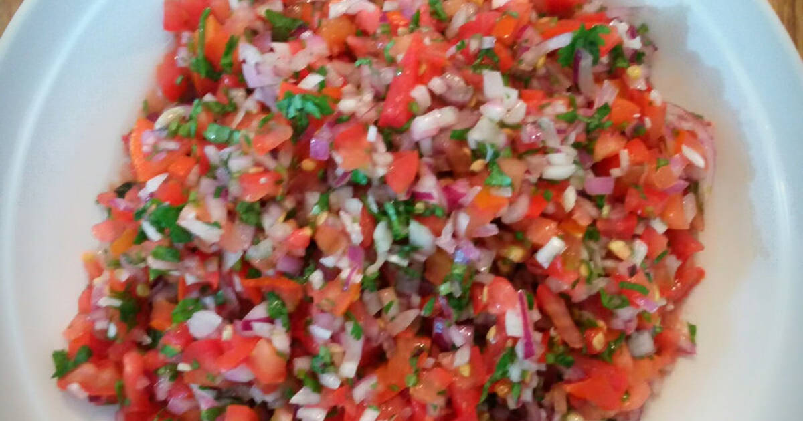

Kachumbari Recipe

Description
Kachumbari is a common snack that is added to spice up a dish in the Kenyan context.
Ingredients
- Red onion
- Tomato
- Lemon
- Coriander
- Salt
- Vinegar
Steps
- Finely chop the onion, tomato and coriander separatly
- Soak the chopped onions in some water for about 5 minutes
- Drain the water and mix the onions, tomatoes and coriander in one bowl
- Squeeze half a lemon into the bowl and add a teaspoon of vinegar
- Add salt to taste